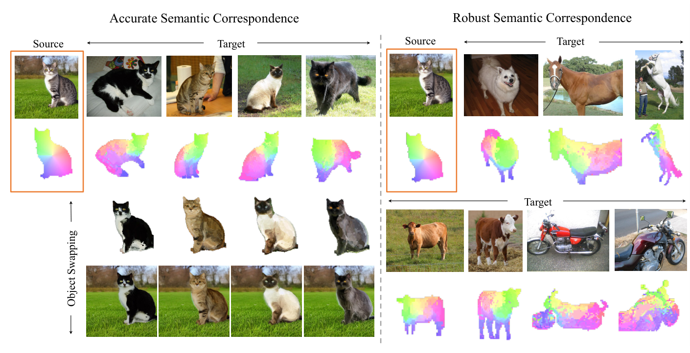
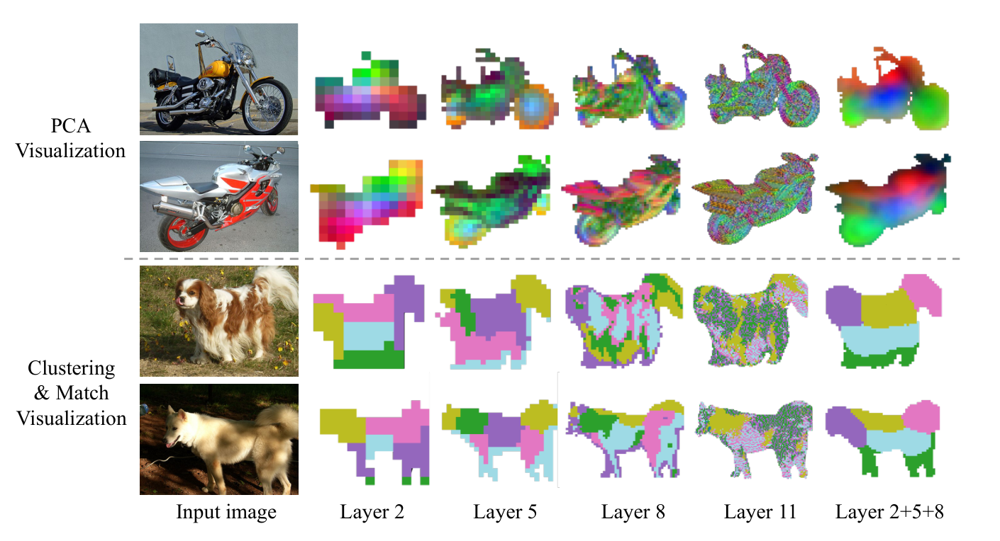
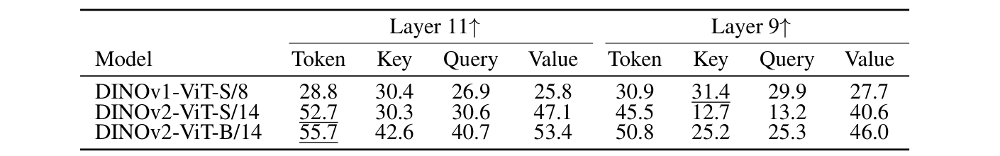
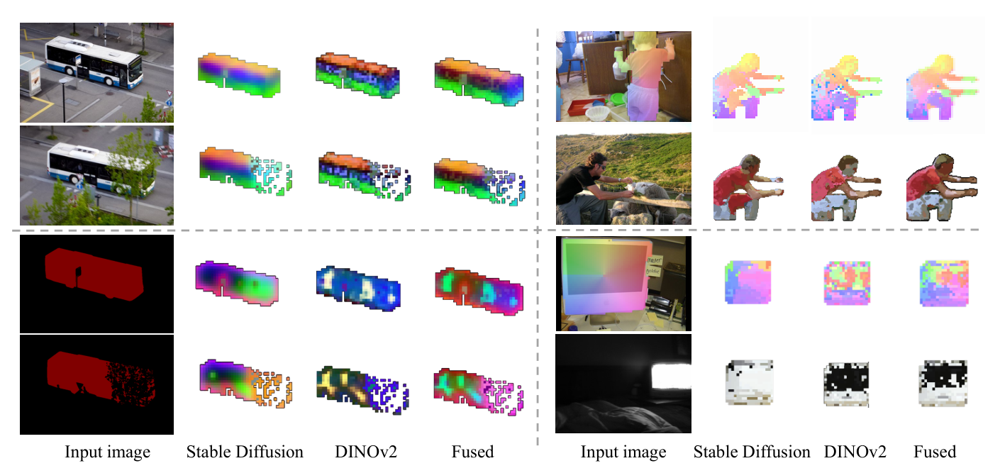
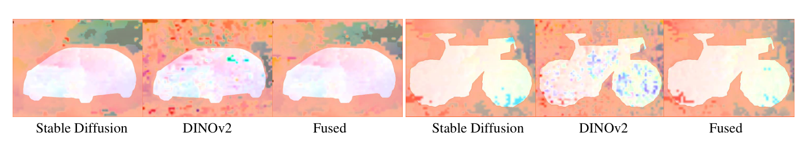
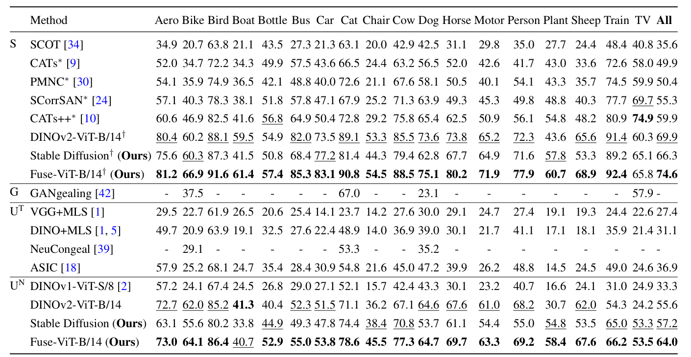
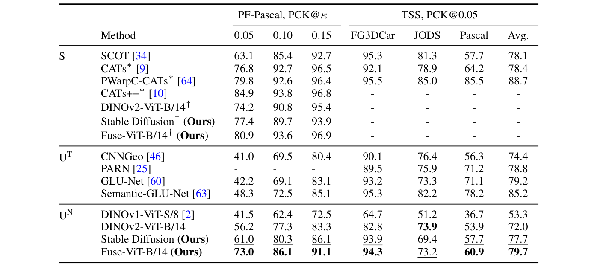
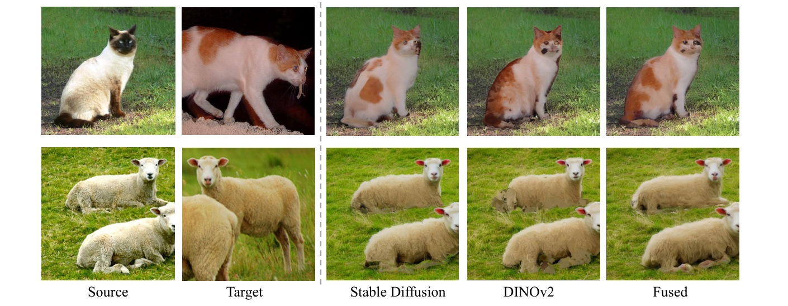

두 특징 이야기: Stable Diffusion은 제로샷 시맨틱 대응에서 DINO를 보완한다
초록 Abstract
텍스트-이미지 확산 모델(diffusion model)은 고품질 이미지 생성과 편집에서 크게 발전해 왔다. 그 결과 분류, 시맨틱 분할(semantic segmentation), 스타일화 등 다운스트림 작업을 위해 확산 모델 특징(feature)이 단일 이미지를 이해하고 처리하는 능력을 탐구한 연구가 많이 나왔다. 그러나 이 특징들이 서로 다른 여러 이미지와 객체 사이에서 무엇을 드러내는지는 훨씬 덜 알려져 있다. 본 연구는 Stable Diffusion(SD) 특징을 시맨틱 대응 및 밀집(dense) 대응에 활용하고, 간단한 후처리만으로 SD 특징이 SOTA 표현과 정량적으로 비슷한 성능을 낸다는 것을 발견했다. 흥미롭게도 분석 결과 SD 특징은 최근 공개된 DINOv2 같은 기존 표현학습 특징과 성질이 매우 다르다. DINOv2는 희소하지만 정확한 매칭을 제공하는 반면, SD 특징은 고품질의 공간 정보를 제공하지만 때때로 시맨틱 매칭이 부정확하다. 우리는 두 특징을 단순히 융합(fusion)하는 것만으로도 놀라울 만큼 잘 작동함을 보이며, 융합 특징 위에서 최근접 이웃(nearest neighbor) 탐색만으로 수행한 제로샷 평가가 SPair-71k, PF-Pascal, TSS 벤치마크에서 기존 SOTA 대비 큰 성능 향상을 보인다. 또한 이렇게 얻은 대응 관계로 작업별 파인튜닝 없이 고품질 객체 교체(object swapping)가 가능함을 보인다.
1. 서론 Introduction
텍스트-이미지 확산 모델[44, 48, 50]의 최근 성과로 인해, 단일 이미지에 대한 이들의 내부 표현을 분석하고 이해하려는 관심이 커지고 있다. 텍스트 프롬프트와 이미지 내용을 효과적으로 연결하는 능력을 고려하면 이 모델들은 이미지가 무엇을 담고 있는지 이해할 수 있어야 하며, 실제로 최근 [11, 31]에서 효과적인 분류기(classifier)로 작동함이 밝혀졌다. 또한 특정 장면을 생성하고 객체의 배치와 레이아웃을 어느 정도 제어할 수 있으므로[72] 객체를 지역화(localize)할 수 있어야 하며, [68]에서 시맨틱 분할에 효과적임이 보여졌다. 이 밖에도 여러 방법[12, 17, 27, 65]이 스타일화·이미지 편집 같은 다운스트림 작업을 위해 특징에 접근하고 편집하는 데 초점을 맞춘다.

그러나 이러한 접근법들은 거의 전적으로 단일 이미지에서의 텍스트-이미지 확산 특징의 성질만을 검토해 왔고, 이 특징들이 서로 다른 여러 이미지와 객체 사이에서 어떻게 관련되는지는 훨씬 덜 알려져 있다. 간단히 말해, Stable Diffusion에서 고양이의 특징과 개의 특징은 얼마나 비슷한가? 본 논문은 두 개 이상의 이미지에서 유사한 픽셀을 연결하는 고전적인 비전 작업인 시맨틱 대응(semantic correspondence)이라는 렌즈를 통해, 서로 다른 이미지의 특징들이 어떻게 관련되는지 이해하는 데 초점을 맞춘다.
대응 작업에서, 우리는 이 특징들을 기본적인 기법으로 앙상블하고 차원을 축소하는 것만으로 밀집·시맨틱 대응 모두에서 다른 SOTA 표현만큼 좋은 표현을 얻을 수 있음을 보인다. 그런데 정성적 결과를 면밀히 보면 흥미로운 점이 발견된다. SD 특징은 공간적 배치(spatial layout)에 대한 강한 감각이 있어 부드러운 대응을 생성하지만(버스의 앞면과 뒷면이 서로 다르게 표현됨, Fig. 3 좌하단), 두 객체 간의 픽셀 수준 매칭은 종종 부정확하다(한 버스의 앞면이 다른 버스의 뒷면과 매칭될 수 있음). 실제로 DINOv1[2] 같은 기존 특징과 비교하면 SD 특징은 매우 다른 강점과 약점을 가진 것으로 보인다.
선행 연구[2]는 DINOv1이 시맨틱 대응과 부위 추정(part estimation)에 효과적인 밀집 시각 서술자(dense visual descriptor)임을 보였지만, 우리가 아는 한 여러 비전 작업에서 향상된 성능을 보인(단, 대응 작업은 제외) DINOv2에 대해서는 아직 철저히 분석되지 않았다. 대응 작업에서 DINOv2는 DINOv1보다 우수하지만 다른 후처리가 필요함을 보인다. DINOv2는 희소하지만 정확한 매칭을 생성하며, 놀랍게도 이는 SD 특징의 풍부한 공간 정보와 자연스러운 보완 관계를 이룬다.
본 연구는 이 특징들을 정렬(align)하고 융합(fuse)하는 간단하면서 효과적인 전략을 제안한다. 융합된 표현은 두 특징의 강점을 모두 활용한다. 대응을 구하기 위해 최근접 이웃만으로 이 특징들의 제로샷(대응 작업에 대한 학습 없음) 성능을 평가한다. 이렇게 매우 단순한 설정임에도 융합 특징은 SPair-71k[36], PF-Pascal[20], TSS[59] 벤치마크에서 기존 방법을 능가한다. 또한 융합 표현은 추정된 밀집 대응을 이용해 두 이미지의 객체를 정체성(identity)을 유지하면서 자연스럽게 맞바꾸는 인스턴스 교체(instance swapping) 같은 새로운 작업도 가능하게 한다. 본 연구의 주요 기여는 다음과 같다.
- 텍스트-이미지 생성 모델의 내부 표현이 시맨틱·밀집 대응에 활용될 수 있는 잠재력을 보인다.
- 공간을 인지하지만 부정확한 대응을 만드는 SD 특징과, 정확하지만 희소한 대응을 만드는 표준 표현학습 특징(DINOv2)의 특성을 분석하고, 둘이 서로를 보완함을 보인다.
- SD와 DINOv2 특징을 정렬·앙상블하는 간단한 전략을 설계하고, 제로샷 평가(최근접 이웃만 사용, 별도 학습 없음)만으로 시맨틱·밀집 대응의 여러 SOTA 방법을 능가함을 보인다. 융합 특징은 두 특징 각각의 성능을 끌어올리며, 까다로운 SPair-71k(+13%)는 물론 PF-Pascal(+15%), TSS(+5%)에서도 기존 방법을 크게 앞선다.
- 제안 방법으로 얻은 고품질 대응을 이용한 인스턴스 교체 응용을 제시한다.
2. 관련 연구 Related work
밀집 대응을 위한 특징 서술자. 딥 모델들[15, 40, 45, 52, 66, 71]은 회전, 크기 변화, 원근 변환 같은 광도(photometric)·기하학적 변화에 강건한 밀집 대응용 특징을 학습한다. 그러나 대부분은 강체 변환(rigid transformation)을 가정한 실외 장면의 이미지 매칭에 초점을 맞춘다. Amir 등[2]은 자기지도(self-supervised) Vision Transformer(DINOv1[6])에서 추출한 특징이 (부위) 공동 분할(co-segmentation), 시맨틱 대응 등 다양한 응용에서 지역화된 시맨틱 정보를 가진 효과적인 밀집 시각 서술자임을 보였다. 최근 DINOv2[41]는 모델 크기를 키우고 대량의 정제 데이터를 결합해 DINOv1[6]을 확장했다. DINOv2는 분류, 분할, 단안(monocular) 깊이 추정 같은 다운스트림 작업에서 강한 일반화를 보이지만 대응 작업에서는 충분히 연구되지 않았다. 본 연구는 DINOv2가 DINOv1보다 훨씬 좋은 대응 결과를 내지만, DINO 특징은 일반적으로 희소하고 노이즈가 있는 대응 필드를 만든다는 것을 보인다.
시맨틱 대응. 시맨틱 대응[33]은 외형, 시점, 비강체(non-rigid) 변형이 다른 같은 클래스의 객체들 사이에서 밀집 대응을 추정하는 작업이다. 기존 방법은 [64]에 따르면 세 단계로 구성된다: 특징 추출, 비용 볼륨(cost volume) 구성, 그리고 변위 필드(displacement field)[60–63] 또는 파라미터화된 변환 회귀[25, 28, 46, 47, 54]. 그러나 이 방법들은 매끄러운 변위 필드나 지역적으로 변하는 (아핀) 변환을 가정하기 때문에 복잡한 관절형(articulated) 변형에 대해 밀집 대응을 잘 구하지 못한다. 고전적인 congealing 방법[29]에서 영감을 받아, 최근 몇몇 방법은 사전학습된 DINOv1 특징[18, 39]이나 GAN 생성 데이터[42]를 이용해 같은 클래스의 여러 객체를 정렬하도록 학습한다. 이는 다른 작업을 위해 학습된 지식이 밀집 대응에도 쓰일 수 있음을 보여 주지만, 객체 정렬에서의 강한 강체성 가정 때문인지 심한 위상(topological) 변화를 잘 다루지 못한다. 반면 우리는 이미지 생성용 Stable Diffusion 특징이 까다로운 관절형·비강체 변형이 있는 제로샷 밀집 대응에서도 뛰어난 능력을 보임을 발견했다.
확산 모델. 확산 확률 모델(diffusion model)[55]과 잡음 제거 확산 확률 모델(DDPM)[23, 38]은 이미지 생성[13, 37, 48, 50, 51, 57]에서 최고 수준의 성능을 보여 왔다. 또한 이미지 분할[3, 4, 8, 26, 58, 67], 객체 검출[7], 단안 깊이 추정[14, 53] 등 다양한 비전 작업에 적용되었다. 최근에는 사전학습된 확산 모델이 무엇을 이해하는지 분석하고, 그 지식을 파놉틱 분할[68], 시맨틱 분할·깊이[73] 같은 단일 이미지 작업에 끌어내는 데 관심이 쏠리고 있다. 본 논문은 이미지 간 제로샷 밀집 대응을 위한 확산 특징의 잠재력을 밝힌다.
3. Stable Diffusion과 Vision Transformer를 통한 시맨틱 대응
먼저 시맨틱 대응 관점에서 Stable Diffusion(SD) 특징의 성질을 살펴본 뒤, DINO와 SD 특징의 상호보완성을 분석하고, 마지막으로 두 특징의 강점을 모두 살리는 간단하고 효과적인 융합 전략을 소개한다.
3.1 Stable Diffusion 특징은 시맨틱 대응에 적합한가?
Stable Diffusion(SD)[48]은 텍스트 입력에 조건화된 고품질 이미지를 합성하는 놀라운 능력을 보이는데, 이는 SD가 이미지에 대한 강력한 내부 표현을 가지고 있으며 이미지의 내용과 레이아웃을 모두 포착할 수 있음을 시사한다. 최근 여러 연구[4, 68, 73]가 사전학습된 SD 특징을 시맨틱 분할이나 깊이 지각 같은 단일 이미지 작업에 사용했다. 특징은 시각적 대응에서 핵심 역할을 하므로, 우리는 SD 특징이 이미지 간 시맨틱 대응 구축에 도움이 되는지 살펴본다.

다음으로 SD 특징을 추출하는 방법을 간단히 설명한다. Stable Diffusion은 세 부분으로 구성된다: 인코더 𝓔, VQGAN[16]에서 파생되어 픽셀 공간과 잠재 공간 사이의 변환을 담당하는 디코더 𝓓, 그리고 잠재 공간에서 동작하는 잡음 제거 U-Net 𝓤. 먼저 입력 이미지 x0를 인코더 𝓔로 잠재 공간에 투영해 잠재 코드 z0를 얻는다. 다음으로 미리 정한 시간 단계 t에 따라 가우시안 노이즈 ε를 더한다. 그리고 시간 단계 t의 잠재 코드 zt와 텍스트 임베딩 C를 입력으로 하여 잡음 제거 U-Net에서 특징 FSD를 추출한다. 전체 과정은 다음과 같다.
여기서 계수 ᾱt는 [23]에서 정의한 노이즈 스케줄을 제어한다. 텍스트 임베딩 C는 [68]을 따라 암묵적 캡셔너(implicit captioner)를 사용하며, 이는 경험적으로 명시적 텍스트 프롬프트보다 낫다.
선행 연구[65]는 이미지-투-이미지 변환에서 중간 U-Net 레이어가 더 많은 시맨틱 정보를 가진다고 보고했지만, 이 특징들이 시맨틱 대응에 적합한지는 분명하지 않았다. 이를 확인하기 위해 먼저 U-Net 디코더의 여러 레이어 특징에 주성분 분석(PCA)을 수행한다. Fig. 2 상단처럼 초기 레이어는 거친(coarse) 수준이지만 시맨틱과 구조(예: 바퀴, 좌석)에 집중하고, 후기 레이어는 텍스처와 외관에 대한 세부 정보를 담는 경향이 있다. 또한 인스턴스 쌍의 특징에 K-Means 클러스터링(k = 5)을 적용해, 클러스터링된 특징이 같은 클래스의 예시들 사이에서 일관된 시맨틱 정보를 담는지 시각적으로 확인한다. Fig. 2 하단처럼 객체의 서로 다른 부위가 인스턴스 쌍 사이에서 클러스터링되고 매칭된다. PCA와 K-Means 분석 모두 초기 레이어는 거칠지만 일관된 시맨틱을, 후기 레이어는 저수준 텍스처 세부를 포착함을 보여 준다. 이 관찰에 따라 시맨틱과 지역적 세부를 모두 잡기 위해 서로 다른 레벨(2 + 5 + 8)의 특징을 이어 붙여(concatenation) 결합한다.
그러나 단순히 이어 붙이면 불필요하게 고차원인 특징(1280 + 960 + 480 = 2720)이 된다. 차원을 줄이기 위해, 각 특징 레이어마다 이미지 쌍 전체에 걸쳐 PCA를 계산한 다음 같은 해상도로 모은다. 구체적으로, 먼저 소스·타겟 이미지의 i번째 레이어 특징 fsi, fti를 추출한다. 다음으로 각 레이어의 소스 특징과 타겟 특징을 이어 붙여 PCA를 함께 계산한다.
그 후 각 레이어의 축소된 특징 f̃si, f̃ti를 모아 같은 해상도로 업샘플링해 최종 SD 특징 f̃s, f̃t를 만든다. Fig. 2의 마지막 열에서 보듯, 앙상블된 특징은 두 성질 사이의 균형을 이루어 충분한 해상도에서 시맨틱과 텍스처 모두에 초점을 맞춘다.
또한 디코더 레이어 내부의 어느 위치에서 특징을 뽑는지도 중요하다. U-Net 디코더 레이어는 이전 디코더 레이어의 특징과 스킵 연결된 인코더 레이어 특징을 입력받아, 컨볼루션 레이어 → 셀프 어텐션 레이어 → 크로스 어텐션 레이어를 차례로 거쳐 디코더 특징을 출력한다. 경험적으로 디코더 특징만 쓰는 것이 인코더 특징과 결합하는 것보다 좋았고, 단일 서브 레이어(예: 컨볼루션, 셀프 어텐션)의 특징보다도 좋았다. 자세한 내용은 부록을 참고하라.
자연스러운 질문은, 더 널리 연구된 판별적(discriminative) 특징에 비해 SD 특징이 유용하고 상호보완적인 시맨틱 대응을 제공하는가이다. 다음으로 널리 쓰이는 DINOv1[6] 특징과 후속 모델인 DINOv2[41] 특징의 시맨틱 대응 성질을 논의한다.
3.2 시맨틱 대응을 위한 DINO 특징의 진화
Caron 등[6]은 자기지도 ViT 특징(DINO)이 “시맨틱 분할을 위한 명시적 정보를 담고 있으며 뛰어난 k-NN 분류기”임을 보였다. Amir 등[2]은 나아가 DINO 특징이 이미지 간 제로샷 시맨틱 대응을 가능하게 하는 여러 흥미로운 성질을 가짐을 입증했다. 가장 최근에는 Oquab 등[41]이 학습 데이터와 모델 크기를 키운 DINOv2를 발표했고, 분할·깊이 등 여러 단일 이미지 작업에서 큰 성능 향상을 관찰했다. 본 연구는 DINOv2가 이미지 간 시맨틱 대응도 크게 개선할 수 있는지 살펴본다.

표준 대응 벤치마크 SPair-71k[36]에서 DINOv2의 여러 내부 특징을 테스트했다(자세한 내용은 4절). Tab. 1의 PCK 결과(높을수록 좋음)에서 보듯 DINOv2 특징은 DINOv1보다 크게 향상되었다. 다만 DINOv2에서는 마지막(11번째) 레이어의 “token” 파셋(facet)이 최고 성능을 낸 반면, Amir 등[2]에 따르면 DINOv1에서는 초기 레이어의 “key” 파셋이 최고 성능을 냈다. 이후 DINOv2 11번째 레이어의 token 특징을 FDINO 또는 DINO라 부른다.

3.3 SD와 DINO 특징의 강점과 약점 비교
이제 SD와 DINO 특징의 성질과 잠재적 상호보완성을 논의한다. 앞의 PCA 시각화 외에도, 두 특징으로 최근접 이웃 탐색을 해 이미지 쌍 간 밀집 대응을 계산하고 다양한 입력 조건에서의 동작을 살펴본다.
같은 객체 인스턴스 간 대응. 쌍을 이룬 이미지 속 인스턴스가 동일한 쉬운 경우(Fig. 3 좌상단)에는 SD와 DINO 모두 잘 작동한다. 그러나 텍스처가 없는 예제에서는 차이가 난다. 객체 마스크만 입력으로 주면(Fig. 3 좌하단) DINOv2 특징은 유효한 대응을 만들지 못하는 반면, SD 특징은 공간 배치에 대한 강한 감각 덕분에 견고하게 작동한다.
서로 다른 객체 인스턴스 간 대응. 클래스 내 변이가 있는 예제에서는 SD와 DINO 모두 잘 작동하지만 잘 되는 영역이 다르다. DINO는 더 정확한 매칭을 내지만(예: Fig. 3 우상단의 허벅지 영역) 대응 필드에 노이즈가 많은 경향이 있으며, 이는 Fig. 3 오른쪽 두 사례 모두에서 보인다. 반면 SD는 더 매끄러운 대응을 만드는 데 뛰어나고(Fig. 3 오른쪽 두 사례), 특히 우하단 사례에서 결정적인 공간 정보를 제공한다.
대응의 공간적 일관성. 추정된 대응의 공간적 일관성(coherence)을 분석하기 위해 시맨틱 흐름(semantic flow), 즉 소스 이미지의 각 픽셀에서 타겟 이미지의 대응 픽셀로 가는 2D 이동 벡터를 추출한다. 그리고 TSS 데이터셋[59]에서 추정된 흐름의 매끄러움, 즉 1차 차분(first-order difference)을 계산한다(Tab. 2). 이 분석은 각 방법이 만든 흐름 맵의 내재적 매끄러움을 보여 준다. SD 특징은 DINOv2-ViT-B/14보다 매끄러운 결과를 내며, 이는 SD 특징이 DINO 특징보다 공간 이해가 더 좋음을 시사한다.
논의. Tab. 2는 TSS 데이터셋에서 각 방법이 추정한 흐름 필드의 공간적 매끄러움을 평가한다. SD 특징은 DINO 특징보다 매끄러운 밀집 대응을 낸다. Fig. 4는 DINO 특징의 대응에는 고립된 이상치(outlier)가 적지 않게 섞여 있는 반면, SD의 대응은 공간적으로 더 일관됨을 시각적으로 보여 준다.

요약. 위 분석은 DINO와 SD 특징의 상호보완성을 드러낸다. DINO 특징은 고수준 시맨틱 정보를 포착하며 희소하지만 정확한 매칭에 강하다. 반면 SD 특징은 저수준 공간 정보에 초점을 맞추며, 특히 강한 텍스처 신호가 없을 때 대응의 공간적 일관성을 보장한다. DINOv2와 확산 특징의 이러한 보완적 성질은 시맨틱 대응 성능 향상의 유망한 가능성을 제시한다. 그렇다면 자연스럽게 다음 질문이 생긴다.
3.4 SD와 DINO 특징을 어떻게 융합할 것인가?
위 논의를 바탕으로 SD와 DINO 특징을 활용하는 간단하면서 효과적인 융합 전략을 제안한다. 핵심 아이디어는 두 특징을 각각 독립적으로 정규화해 스케일과 분포를 맞춘 뒤 이어 붙이는 것이다.
여기서 ‖·‖2는 L2 정규화, α는 두 특징의 상대 가중치를 조절하는 하이퍼파라미터이다. 이 융합에서 중요한 것은 가중치 α의 선택이다. 경험적으로 α = 0.5가 두 특징의 균형을 잘 맞춰 보완적 강점을 효과적으로 살린다. 절제(ablation) 실험은 보충 자료를 참고하라.
Fig. 3에서 이 단순한 융합 전략의 놀라운 효과를 확인할 수 있다. SPair-71k의 까다로운 사례에서 눈에 띄는 개선이 있으며, 결합된 특징은 모든 사례에서 각 특징 단독보다 확연히 우수하다. 대응의 정밀도가 높아지고 노이즈가 줄어들 뿐 아니라, SD 특징 고유의 매끄러운 전이(transition)와 공간 정보도 유지한다. 또한 Tab. 2(정량)와 Fig. 4(정성)에서 보듯, 매끄러운 전이와 공간 정보를 유지하는 측면에서 융합 특징의 성능은 SD 특징과 매우 가깝다.
다음 절에서는 여러 공개 벤치마크에서 기존 방법과 폭넓게 비교해 이 단순한 융합 전략의 뛰어난 효과를 추가로 보인다.
4. 실험 및 분석 Experiments and analysis
먼저 공개 벤치마크에서 희소(sparse) 대응과 밀집(dense) 대응을 심층 분석한다. 이어서 새로운 응용으로, 제안 방법의 밀집 대응을 활용한 간단하고 효과적인 이미지 쌍 간 인스턴스 교체 방법을 제시한다.
대응을 위한 특징 평가. 추출된 특징을 두 가지 설정에서 평가한다. 첫째, 제로샷 설정에서는 [2]를 따라 이미지 쌍의 특징 맵에서 직접 최근접 이웃을 찾는다. 둘째, 학습 분할(train split)이 있는 데이터셋에서는 추출된 특징 위에 병목(bottleneck) 레이어[22, 68]를 추가해 지도 방식으로 파인튜닝한다. 학습 목표는 [35]와 같으며, 대응 키포인트에 대한 CLIP 스타일 대칭 교차 엔트로피 손실(symmetric cross entropy loss)이다.
구현 세부사항. 특징 추출기로 Stable Diffusion v1-5를 사용하며, 확산 모델의 시간 단계는 기본 t = 100이다. 입력 해상도는 확산 모델 960×960, DINO 모델 840이며, 둘 다 해상도 60의 특징 맵을 만든다. PCA에는 효율을 위해 거의 최적인 근사 SVD 알고리즘[19]을 쓰고, DINO-ViT-B/14와 융합할 때는 특징 차원을 256으로 줄인다. 밀집 대응 시각화 시에는 전처리로 [68]에서 얻은 분할 마스크를 적용한다. 모든 실험은 NVIDIA RTX3090 GPU 한 장에서 수행했다.
데이터셋. 희소 대응은 두 표준 데이터셋 SPair-71k[36]와 PF-Pascal[20]에서 평가하며, 각각 18개·20개 카테고리에서 뽑은 70,958쌍·1,341쌍으로 구성된다. 밀집 대응은 FG3DCAR[32], JODS[49], PASCAL[21]에서 파생된 400개 이미지 쌍에 밀집 대응 주석을 제공하는 유일한 데이터셋인 TSS[59]에서 평가한다.
평가지표. 대응 정확도는 표준 지표인 PCK(Percentage of Correct Keypoints)[70]로 측정하며, 임계값은 κ·max(h, w)이다(κ는 양수). (h, w)는 SPair-71k에서는 인스턴스 바운딩 박스 크기, PF-Pascal과 TSS에서는 이미지 크기이며, 선행 연구[18, 39, 42]와 같은 프로토콜을 따른다.
4.1 희소 대응 Sparse correspondence
Tab. 3은 SPair-71k에서의 제로샷 및 지도학습 평가 결과이다. 제로샷 방법(Fuse-ViT-B/14)은 비지도 방법은 물론 기존 지도학습 방법까지 큰 차이로 앞서며 평균 PCK 64.0을 기록한다. 또한 융합 전략은 DINOv2 베이스라인(DINOv2-ViT-B/14)의 성능을 크게 높여 PCK를 55.6에서 64.0으로 8.4p 끌어올린다. SD 특징은 평균 PCK에서 DINOv2와 대등할 뿐 아니라, 공간 정보가 중요한 특정 카테고리(“potted plant”, “train”, “TV” 등)에서 특히 뛰어나다. 지도학습 설정에서도 같은 경향이 나타나며, 특히 기존 방법(59.9) 대비 74.6으로 PCK가 14.7p 향상되었다.

Tab. 4에서는 외형, 자세, 형태 변화가 적은 비교적 쉬운 데이터셋인 PF-Pascal에서도 검증한다. 제안 방법은 모든 임계값에서 가장 높은 평균 PCK를 기록하며 모든 비지도 방법을 일관되게 앞선다. 융합(Fuse-ViT-B/14)은 이번에도 DINOv2 베이스라인 대비 성능을 크게 높여, 두 특징 모두의 이점을 취하는 융합 전략의 효과를 보여 준다.
4.2 밀집 대응 Dense correspondence
Tab. 4는 TSS 데이터셋[59]의 밀집 대응 평가도 함께 보여 준다. 융합(Fuse-ViT-B/14)은 TSS에서 최근접 이웃 기반 비지도 방법(UN) 전체를 능가한다. 이 결과는 DINOv2-ViT-B/14 베이스라인 대비 7.7p의 큰 향상으로 융합 전략의 효과를 다시 확인해 준다. 다만 TSS는 외형·시점·변형의 변화가 적은 쉬운 예제(자동차, 버스, 기차, 비행기, 자전거 등)로 구성되어 있어, 강한 공간적 매끄러움 사전(prior)을 가진 방법이 이 벤치마크에서 좋은 수치를 얻기 유리할 수 있다는 점에 유의해야 한다.

4.3 인스턴스 교체 Instance swapping
같거나 비슷한 카테고리의 인스턴스를 가진 이미지 쌍이 주어졌을 때, 인스턴스 교체는 타겟 이미지의 인스턴스(타겟 인스턴스)를 소스 이미지의 인스턴스(소스 인스턴스) 자리로 옮겨 놓되, 타겟 인스턴스의 정체성과 소스 인스턴스의 자세를 유지하는 작업이다. 그 결과 타겟 인스턴스가 소스 환경에 자연스럽게 녹아든 새 이미지가 만들어진다.
제안 방법의 고품질 밀집 대응을 이용하면 다음의 간단한 과정으로 그럴듯한 인스턴스 교체를 할 수 있다.
- 저해상도 특징 맵을 타겟 이미지 크기에 맞게 업샘플링한다.
- 업샘플링된 특징 맵에서 최근접 이웃 패치를 기준으로, 분할된 인스턴스에 대해 픽셀 수준 교체를 수행해 예비 교체 이미지를 얻는다.
- 교체 이미지의 품질을 높이기 위해, Stable Diffusion 기반 이미지-투-이미지 변환 과정[65]으로 예비 결과를 정제한다.

정제 과정을 더 구체적으로 말하면, 먼저 DDIM 역변환(inversion)[56]으로 교체 이미지를 초기 노이즈로 되돌린 뒤, 확산 모델에서 특징을 추출하는 DDIM 잡음 제거 샘플링을 수행한다. 마지막으로 인스턴스 카테고리를 포함한 프롬프트와 결합해 정제된 이미지를 생성한다. 이 이미지 속 교체된 인스턴스는 시각적으로 더 일관되고 그럴듯한 외관을 가진다. 정제 과정의 정량·정성 분석은 각각 보충 자료 A.8과 B.2를 참고하라.
Fig. 5는 서로 다른 특징을 사용한 인스턴스 교체를 시각적으로 비교한다. SD는 매끄러운 결과를, DINOv2는 미세한 세부를 강조하며, 두 특징의 융합은 공간적 매끄러움과 세부 사이의 균형을 보여 준다. 더 많은 예제는 보충 자료에 있다.
또한 [69] 벤치마크의 800쌍 부분집합에서 여러 특징을 정량 비교했다. Tab. 5의 결과는 세 지표(FID, 품질 점수, CLIP 점수) 모두에서 융합 방식이 일관되게 우수함을 보여 준다. 지표는 [69]를 따른다: FID는 생성 이미지와 COCO 2017 테스트 이미지의 CLIP 특징으로 측정하고, CLIP 점수는 소스 이미지와 타겟 이미지에서 편집된 영역의 CLIP 특징 간 코사인 유사도로 측정한다.
이 결과는 융합 특징을 이용한 밀집 대응이 인스턴스의 외관을 유지할 뿐 아니라 고품질 이미지 생성에도 강점이 있음을 보여 준다. 융합 방식의 CLIP 점수가 더 높다는 것은 융합 표현이 참조 이미지에 더 충실함을 뜻한다. 한편 더 높은 품질 점수와 더 낮은 FID는 융합 방식으로 생성한 이미지의 지각적(perceptual) 품질과 시맨틱 일관성이 더 뛰어남을 보여 준다.
4.4 한계 Limitations
제안 방법은 유망한 대응 성능을 보이지만 한계도 있다. 융합 특징의 해상도가 상대적으로 낮아 정밀한 매칭을 만드는 데 방해가 되며, 이는 TSS 같은 밀집 대응 작업에서 특히 중요하다. 실패 사례에 대한 자세한 분석은 보충 자료에 있다. 또한 Stable Diffusion은 한 번의 추론만 필요하지만, DINO 특징만 쓸 때에 비해 대응 계산 비용을 상당히 늘린다.
4.5 특징 상호보완성에 대한 정량 분석
Tab. 6에서 SD와 DINOv2 특징의 비중복성(non-redundancy)을 추가로 정량 분석한다. SPair-71k와 PF-Pascal에서 세 가지 PCK 수준에 대해 두 특징의 오류 분포를 자세히 보여 준다. 대부분의 설정에서 전체 사례의 20~30%는 한 특징은 성공하고 다른 특징은 실패하는 경우로, 두 특징이 상당한 양의 서로 겹치지 않는 정보를 가진다는 것을 시사한다. 더 자세한 분석은 보충 자료 A.10을 참고하라.
5. 특징 행동에 대한 논의 Discussion on feature behavior
Stable Diffusion(SD)과 DINOv2 특징에서 관찰된 뚜렷한 행동 차이는 그 근본 원인에 대한 의문을 낳는다. 자원 한계로 검증하기는 어렵지만 몇 가지 가능한 설명을 제시한다. 학습 패러다임 측면에서, DINO의 자기지도 학습은 학습 시 증강(augmentation) 때문에 공간 정보에 대한 불변성(invariance)을 유도할 수 있다. 이와 달리 텍스트-이미지 합성을 위해 학습된 SD는 전역·지역 시각 단서를 모두 인식해야 하므로 공간 민감도가 높아졌을 가능성이 있다. 아키텍처 차이 측면에서, ViT 기반인 DINOv2는 이미지를 패치의 시퀀스로 해석한다. 위치 인코딩이 있더라도 지역 구조를 그만큼 중시하지 않을 수 있다. 반면 SD의 UNet에 있는 컨볼루션 레이어는 세부를 더 많이 유지하고 공간 정보를 더 잘 보존할 수 있다. 전반적으로 이 차이의 원인을 밝히는 것은 흥미로운 주제이며 향후 연구의 좋은 방향이다.
6. 결론 Conclusion
본 연구는 텍스트-이미지 생성 모델인 Stable Diffusion의 내부 표현을 시맨틱 대응 작업에 활용할 가능성을 탐구했다. Stable Diffusion 특징과 자기지도 DINO-ViT 특징의 상호보완성을 밝혀, 각 특징의 강점과 이를 효과적으로 결합하는 방법에 대한 더 깊은 이해를 제공한다. 두 종류의 특징을 정렬·융합하는 간단한 전략이 까다로운 SPair-71k에서 성능을 크게 높이고 기존 방법을 능가함을 실험적으로 입증했으며, 이는 시각적 대응을 위한 더 나은 특징을 추구하는 것이 가치 있음을 시사한다.
참고문헌 References (원문)
- [1] Kfir Aberman, Jing Liao, Mingyi Shi, Dani Lischinski, Baoquan Chen, and Daniel Cohen-Or. Neural best-buddies: Sparse cross-domain correspondence. ACM Transitions on Graphics, 37 (4):1–14, 2018. 8
- [2] Shir Amir, Yossi Gandelsman, Shai Bagon, and Tali Dekel. Deep ViT features as dense visual descriptors. In European Conference on Computer Vision Workshops, 2022. 2, 3, 5, 6, 7, 8, 9
- [3] Tomer Amit, Tal Shaharbany, Eliya Nachmani, and Lior Wolf. SegDiff: Image segmentation with diffusion probabilistic models. arXiv:2112.00390, 2021. 3
- [4] Dmitry Baranchuk, Andrey Voynov, Ivan Rubachev, Valentin Khrulkov, and Artem Babenko. Label-efficient semantic segmentation with diffusion models. In International Conference on Learning Representations, 2022. 3
- [5] Mathilde Caron, Ishan Misra, Julien Mairal, Priya Goyal, Piotr Bojanowski, and Armand Joulin. Unsupervised learning of visual features by contrasting cluster assignments. Advances in Neural Information Processing Systems, pages 9912–9924, 2020. 8
- [6] Mathilde Caron, Hugo Touvron, Ishan Misra, Hervé Jégou, Julien Mairal, Piotr Bojanowski, and Armand Joulin. Emerging properties in self-supervised vision transformers. In International Conference Computer Vision, pages 9650–9660, 2021. 3, 5
- [7] Shoufa Chen, Peize Sun, Yibing Song, and Ping Luo. DiffusionDet: Diffusion model for object detection. In International Conference Computer Vision, 2023. 3
- [8] Ting Chen, Lala Li, Saurabh Saxena, Geoffrey Hinton, and David J. Fleet. A generalist framework for panoptic segmentation of images and videos. In International Conference Computer Vision, 2023. 3
- [9] Seokju Cho, Sunghwan Hong, Sangryul Jeon, Yunsung Lee, Kwanghoon Sohn, and Seungryong Kim. Cats: Cost aggregation transformers for visual correspondence. Advances in Neural Information Processing Systems, 34:9011–9023, 2021. 8, 9
- [10] Seokju Cho, Sunghwan Hong, and Seungryong Kim. Cats++: Boosting cost aggregation with convolutions and transformers. arXiv preprint arXiv:2202.06817, 2022. 8, 9
- [11] Kevin Clark and Priyank Jaini. Text-to-image diffusion models are zero-shot classifiers. arXiv preprint arXiv:2303.15233, 2023. 1
- [12] Guillaume Couairon, Jakob Verbeek, Holger Schwenk, and Matthieu Cord. DiffEdit: Diffusion- based semantic image editing with mask guidance. In International Conference on Learning Representations, 2023. 1
- [13] Prafulla Dhariwal and Alexander Nichol. Diffusion models beat GANs on image synthesis. Advances in Neural Information Processing Systems, pages 8780–8794, 2021. 3
- [14] Yiqun Duan, Xianda Guo, and Zheng Zhu. DiffusionDepth: Diffusion denoising approach for monocular depth estimation. arXiv:2303.05021, 2023. 3
- [15] Mihai Dusmanu, Ignacio Rocco, Tomas Pajdla, Marc Pollefeys, Josef Sivic, Akihiko Torii, and Torsten Sattler. D2-Net: A trainable CNN for joint description and detection of local features. In IEEE Conference on Computer Vision and Pattern Recogition, pages 8092–8101, 2019. 3
- [16] Patrick Esser, Robin Rombach, and Björn Ommer. Taming transformers for high-resolution image synthesis. In IEEE Conference on Computer Vision and Pattern Recogition, pages 12873–12883, 2021. 4
- [17] Vidit Goel, Elia Peruzzo, Yifan Jiang, Dejia Xu, Nicu Sebe, Trevor Darrell, Zhangyang Wang, and Humphrey Shi. PAIR-Diffusion: Object-level image editing with structure-and-appearance paired diffusion models. arXiv preprint arXiv:2303.17546, 2023. 1
- [18] Kamal Gupta, Varun Jampani, Carlos Esteves, Abhinav Shrivastava, Ameesh Makadia, Noah Snavely, and Abhishek Kar. ASIC: Aligning sparse in-the-wild image collections. arXiv preprint arXiv:2303.16201, 2023. 3, 7, 8
- [19] Nathan Halko, Per-Gunnar Martinsson, and Joel A. Tropp. Finding structure with randomness: Probabilistic algorithms for constructing approximate matrix decompositions. SIAM review, 53 (2):217–288, 2011. 7
- [20] Bumsub Ham, Minsu Cho, Cordelia Schmid, and Jean Ponce. Proposal Flow: Semantic correspondences from object proposals. IEEE Transactions on Pattern Analysis and Machine Intelligence, 40(7):1711–1725, 2017. 2, 7
- [21] Bharath Hariharan, Pablo Arbeláez, Lubomir Bourdev, Subhransu Maji, and Jitendra Malik. Semantic contours from inverse detectors. In International Conference Computer Vision, pages 991–998, 2011. 7
- [22] Kaiming He, Xiangyu Zhang, Shaoqing Ren, and Jian Sun. Deep residual learning for im- age recognition. In Proceedings of the IEEE Conference on Computer Vision and Pattern Recognition (CVPR), June 2016. 7
- [23] Jonathan Ho, Ajay Jain, and Pieter Abbeel. Denoising diffusion probabilistic models. In Advances in Neural Information Processing Systems, pages 6840–6851, 2020. 3, 4
- [24] Shuaiyi Huang, Luyu Yang, Bo He, Songyang Zhang, Xuming He, and Abhinav Shrivastava. Learning semantic correspondence with sparse annotations. In European Conference Computer Vision, pages 267–284, 2022. 8
- [25] Sangryul Jeon, Seungryong Kim, Dongbo Min, and Kwanghoon Sohn. PARN: Pyramidal affine regression networks for dense semantic correspondence. In European Conference Computer Vision, pages 351–366, 2018. 3, 9
- [26] Peng Jiang, Fanglin Gu, Yunhai Wang, Changhe Tu, and Baoquan Chen. DifNet: Semantic segmentation by diffusion networks. In Advances in Neural Information Processing Systems, 2018. 3
- [27] Bahjat Kawar, Shiran Zada, Oran Lang, Omer Tov, Huiwen Chang, Tali Dekel, Inbar Mosseri, and Michal Irani. Imagic: Text-based real image editing with diffusion models. In IEEE Conference on Computer Vision and Pattern Recogition, 2023. 1
- [28] Seungryong Kim, Stephen Lin, Sang Ryul Jeon, Dongbo Min, and Kwanghoon Sohn. Recur- rent transformer networks for semantic correspondence. In Advances in Neural Information Processing Systems, 2018. 3
- [29] Erik G. Learned-Miller. Data driven image models through continuous joint alignment. IEEE Transactions on Pattern Analysis and Machine Intelligence, 28(2):236–250, 2005. 3
- [30] Jae Yong Lee, Joseph DeGol, Victor Fragoso, and Sudipta N. Sinha. PatchMatch-based neighborhood consensus for semantic correspondence. In IEEE Conference on Computer Vision and Pattern Recogition, pages 13153–13163, 2021. 8
- [31] Alexander C. Li, Mihir Prabhudesai, Shivam Duggal, Ellis Brown, and Deepak Pathak. Your diffusion model is secretly a zero-shot classifier. arXiv preprint arXiv:2303.16203, 2023. 1
- [32] Yen-Liang Lin, Vlad I Morariu, Winston Hsu, and Larry S. Davis. Jointly optimizing 3D model fitting and fine-grained classification. In European Conference Computer Vision, pages 466–480, 2014. 7
- [33] Ce Liu, Jenny Yuen, and Antonio Torralba. SIFT Flow: Dense correspondence across scenes and its applications. IEEE Transactions on Pattern Analysis and Machine Intelligence, 33(5): 978–994, 2010. 3
- [34] Yanbin Liu, Linchao Zhu, Makoto Yamada, and Yi Yang. Semantic correspondence as an optimal transport problem. In IEEE Conference on Computer Vision and Pattern Recogition, pages 4463–4472, 2020. 8, 9
- [35] Grace Luo, Lisa Dunlap, Dong Huk Park, Aleksander Holynski, and Trevor Darrell. Diffusion hyperfeatures: Searching through time and space for semantic correspondence. arXiv preprint arXiv:2305.14334, 2023. 7
- [36] Juhong Min, Jongmin Lee, Jean Ponce, and Minsu Cho. SPair-71k: A large-scale benchmark for semantic correspondence. arXiv:1908.10543, 2019. 2, 5, 7
- [37] Alex Nichol, Prafulla Dhariwal, Aditya Ramesh, Pranav Shyam, Pamela Mishkin, Bob McGrew, Ilya Sutskever, and Mark Chen. GLIDE: Towards photorealistic image generation and editing with text-guided diffusion models. In International Confernece on Machine Learning, 2022. 3
- [38] Alexander Quinn Nichol and Prafulla Dhariwal. Improved denoising diffusion probabilistic models. In International Confernece on Machine Learning, pages 8162–8171, 2021. 3
- [39] Dolev Ofri-Amar, Michal Geyer, Yoni Kasten, and Tali Dekel. Neural Congealing: Aligning images to a joint semantic atlas. In IEEE Conference on Computer Vision and Pattern Recogition, 2023. 3, 7, 8
- [40] Yuki Ono, Eduard Trulls, Pascal Fua, and Kwang Moo Yi. LF-Net: Learning local features from images. In Advances in Neural Information Processing Systems, 2018. 3
- [41] Maxime Oquab, Timothée Darcet, Théo Moutakanni, Huy Vo, Marc Szafraniec, Vasil Khalidov, Pierre Fernandez, Daniel Haziza, Francisco Massa, Alaaeldin El-Nouby, et al. DINOv2: Learning robust visual features without supervision. arXiv:2304.07193, 2023. 3, 5
- [42] William Peebles, Jun-Yan Zhu, Richard Zhang, Antonio Torralba, Alexei A. Efros, and Eli Shechtman. GAN-supervised dense visual alignment. In IEEE Conference on Computer Vision and Pattern Recogition, pages 13470–13481, 2022. 3, 7, 8
- [43] Federico Perazzi, Jordi Pont-Tuset, Brian McWilliams, Luc Van Gool, Markus Gross, and Alexander Sorkine-Hornung. A benchmark dataset and evaluation methodology for video object segmentation. In IEEE Conference on Computer Vision and Pattern Recogition, pages 724–732, 2016. 5
- [44] Aditya Ramesh, Prafulla Dhariwal, Alex Nichol, Casey Chu, and Mark Chen. Hierarchical text-conditional image generation with clip latents. arXiv preprint arXiv:2204.06125, 2022. 1
- [45] Jerome Revaud, César De Souza, Martin Humenberger, and Philippe Weinzaepfel. R2D2: Reliable and repeatable detector and descriptor. In Advances in Neural Information Processing Systems, 2019. 3
- [46] Ignacio Rocco, Relja Arandjelovi´c, and Josef Sivic. Convolutional neural network architecture for geometric matching. In IEEE Conference on Computer Vision and Pattern Recogition, pages 6148–6157, 2017. 3, 9
- [47] Ignacio Rocco, Relja Arandjelovi´c, and Josef Sivic. End-to-end weakly-supervised semantic alignment. In IEEE Conference on Computer Vision and Pattern Recogition, pages 6917–6925, 2018. 3
- [48] Robin Rombach, Andreas Blattmann, Dominik Lorenz, Patrick Esser, and Björn Ommer. High- resolution image synthesis with latent diffusion models. In IEEE Conference on Computer Vision and Pattern Recogition, pages 10684–10695, 2022. 1, 3
- [49] Michael Rubinstein, Armand Joulin, Johannes Kopf, and Ce Liu. Unsupervised joint object discovery and segmentation in internet images. In IEEE Conference on Computer Vision and Pattern Recogition, pages 1939–1946, 2013. 7
- [50] Chitwan Saharia, William Chan, Huiwen Chang, Chris Lee, Jonathan Ho, Tim Salimans, David Fleet, and Mohammad Norouzi. Palette: Image-to-image diffusion models. In ACM SIGGRAPH, pages 1–10, 2022. 1, 3
- [51] Chitwan Saharia, William Chan, Saurabh Saxena, Lala Li, Jay Whang, Emily L. Denton, Kamyar Ghasemipour, Raphael Gontijo Lopes, Burcu Karagol Ayan, Tim Salimans, et al. Photorealistic text-to-image diffusion models with deep language understanding. In Advances in Neural Information Processing Systems, pages 36479–36494, 2022. 3
- [52] Paul-Edouard Sarlin, Daniel DeTone, Tomasz Malisiewicz, and Andrew Rabinovich. SuperGlue: Learning feature matching with graph neural networks. In IEEE Conference on Computer Vision and Pattern Recogition, pages 4938–4947, 2020. 3
- [53] Saurabh Saxena, Abhishek Kar, Mohammad Norouzi, and David J. Fleet. Monocular depth estimation using diffusion models. arXiv:2302.14816, 2023. 3
- [54] Paul Hongsuck Seo, Jongmin Lee, Deunsol Jung, Bohyung Han, and Minsu Cho. Attentive semantic alignment with offset-aware correlation kernels. In European Conference Computer Vision, pages 349–364, 2018. 3
- [55] Jascha Sohl-Dickstein, Eric Weiss, Niru Maheswaranathan, and Surya Ganguli. Deep unsuper- vised learning using nonequilibrium thermodynamics. In International Confernece on Machine Learning, pages 2256–2265, 2015. 3
- [56] Jiaming Song, Chenlin Meng, and Stefano Ermon. Denoising diffusion implicit models. In International Conference on Learning Representations, 2021. 9
- [57] Yang Song and Stefano Ermon. Improved techniques for training score-based generative models. In Advances in Neural Information Processing Systems, pages 12438–12448, 2020. 3
- [58] Haoru Tan, Sitong Wu, and Jimin Pi. Semantic diffusion network for semantic segmentation. In Advances in Neural Information Processing Systems, pages 8702–8716, 2022. 3
- [59] Tatsunori Taniai, Sudipta N Sinha, and Yoichi Sato. Joint recovery of dense correspondence and cosegmentation in two images. In IEEE Conference on Computer Vision and Pattern Recogition, pages 4246–4255, 2016. 2, 6, 7, 8
- [60] Prune Truong, Martin Danelljan, and Radu Timofte. GLU-Net: Global-local universal network for dense flow and correspondences. In IEEE Conference on Computer Vision and Pattern Recogition, pages 6258–6268, 2020. 3, 9
- [61] Prune Truong, Martin Danelljan, Luc Van Gool, and Radu Timofte. GOCor: Bringing globally optimized correspondence volumes into your neural network. In Advances in Neural Information Processing Systems, pages 14278–14290, 2020.
- [62] Prune Truong, Martin Danelljan, Luc Van Gool, and Radu Timofte. Learning accurate dense correspondences and when to trust them. In IEEE Conference on Computer Vision and Pattern Recogition, pages 5714–5724, 2021.
- [63] Prune Truong, Martin Danelljan, Fisher Yu, and Luc Van Gool. Warp consistency for unsuper- vised learning of dense correspondences. In International Conference Computer Vision, pages 10346–10356, 2021. 3, 9
- [64] Prune Truong, Martin Danelljan, Fisher Yu, and Luc Van Gool. Probabilistic warp consistency for weakly-supervised semantic correspondences. In IEEE Conference on Computer Vision and Pattern Recogition, pages 8708–8718, 2022. 3, 9
- [65] Narek Tumanyan, Michal Geyer, Shai Bagon, and Tali Dekel. Plug-and-play diffusion features for text-driven image-to-image translation. In IEEE Conference on Computer Vision and Pattern Recogition, 2023. 1, 4, 8
- [66] Michał J. Tyszkiewicz, Pascal Fua, and Eduard Trulls. DISK: Learning local features with policy gradient. In Advances in Neural Information Processing Systems, pages 14254–14265, 2020. 3
- [67] Julia Wolleb, Robin Sandkühler, Florentin Bieder, Philippe Valmaggia, and Philippe C. Cattin. Diffusion models for implicit image segmentation ensembles. arXiv:2112.03145, 2021. 3
- [68] Jiarui Xu, Sifei Liu, Arash Vahdat, Wonmin Byeon, Xiaolong Wang, and Shalini De Mello. Open-vocabulary panoptic segmentation with text-to-image diffusion models. In IEEE Confer- ence on Computer Vision and Pattern Recogition, 2023. 1, 3, 4, 7
- [69] Binxin Yang, Shuyang Gu, Bo Zhang, Ting Zhang, Xuejin Chen, Xiaoyan Sun, Dong Chen, and Fang Wen. Paint by Example: Exemplar-based image editing with diffusion models. arXiv:2211.13227, 2022. 9
- [70] Yi Yang and Deva Ramanan. Articulated human detection with flexible mixtures of parts. IEEE Transactions on Pattern Analysis and Machine Intelligence, 35(12):2878–2890, 2012. 7
- [71] Kwang Moo Yi, Eduard Trulls, Vincent Lepetit, and Pascal Fua. LIFT: Learned invariant feature transform. In European Conference Computer Vision, pages 467–483, 2016. 3
- [72] Lvmin Zhang and Maneesh Agrawala. Adding conditional control to text-to-image diffusion models. arXiv preprint arXiv:2302.05543, 2023. 1
- [73] Wenliang Zhao, Yongming Rao, Zuyan Liu, Benlin Liu, Jie Zhou, and Jiwen Lu. Unleashing text-to-image diffusion models for visual perception. arXiv:2303.02153, 2023. 3